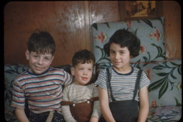

For Judi’s memorial in late 2021, people who knew and cared about her, of whom there were many, were invited to write down memories to share. I couldn’t do it, perhaps partly because two of her three children sent me e-mails to express rage at how I approached her death, but I expect it was more because I wasn’t ready for the emotional strains of trying to assemble memories within the context of whatever grieving I was doing. (I think most of my grieving for her and our parents occurred before they died, when they were no longer the human beings they had been for most of their lives and, in that sense, already dead to me.)
This is my effort finally to write down some of my memories. As with any reminiscence, this may reveal more about me than about her.
Judi died shortly before her 78th birthday. For several years she had been suffering from Parkinson’s Disease and (so it seemed to me) rapidly increasing dementia (a common but not inevitable result of Parkinson’s).
I don’t remember the last time I saw her, but it may have been as far back as three years before her death, when I went to Brooklyn for a memorial for our mother. I also don’t remember when Judi no longer recognized me, which I think was before that; that absence of her self would have been a stimulus for my future physical absence. My reaction would have been reinforced by my limited experience with the horrors of dementia in both our parents—our father for some 10 deteriorating years before he died at 85 in November of 2003, our mother for her last year or so before dying at 98 in December of 2017.
My absence did not endear me to her immediate family, who, unlike me, could not avoid daily experience of her condition and accompanying responsibilities.
Judi started spelling her name that way (instead of “Judy”) in girlhood, perhaps during puberty. My impression is that she wanted her name (and herself) to be unique, or at least not run-of-the-mill ordinary.
She and I were almost 22 months apart, and as children we fought like crazy. Our sibling antagonisms greatly vexed our parents. We lived on two different chicken farms over a period of about 12 years, from when Judi was about 3 and I about 5. She told her children that I had hit her and thrown eggs at her, and I don’t doubt she was right: when we were children, I was not at all a loving or considerate brother. I have no memory of what she may have done to me in turn, but I seriously doubt it approached the level of what I did to her, though I don’t know at what point I might have stopped my own violent behavior. During her final two years of grade school, I was in junior high, and it’s possible that the partial separation decreased our animosity. But maybe not.
We grew up on two different South Jersey chicken farms. I recall little about the first, though I remember the nearby one-room schoolhouse I attended through third grade (so she would have been there through 1st grade). I have no memory of what life for Judi was like in those years.
Our second home was not too many miles away and is the setting for further childhood memories. The 10-acre property had been a tree nursery, and our father had almost all the trees knocked down, with the fallen trunks gathered into large wood piles scattered over the property. I used to play in those piles, and I wouldn’t be surprised if Judi did, too.
On the cleared property, perhaps 30 yards from our house, Dad built a chicken coop from scratch. This was a man who had never completed high school but read and/or talked to people about how to lay out a foundation, order needed materials, and build up brick walls topped by windows strung with chicken wire. The steeply sloped room was covered with tarpaper. He may have hired someone to help at certain points, but that would likely have been to save time, not add to his knowledge.
Raising chickens for eggs lasted about 7 years, til about 1957. For maybe a couple of years after that, our parents turned to operating a kind of frozen custard stand, then sold it (at a significant financial loss), declared bankruptcy, got college degrees by their mid-forties, and became teachers in North Jersey for the rest of their working lives.
While the chicken business existed, all three of us kids worked with the hens and their eggs in various ways corresponding to what our parents thought was age-appropriate. Presumably because I was the eldest (and male), I would have had the hardest work, and if so, this could easily have exacerbated my antagonism towards my sister (which hardly needed any help). The only thing I can remember of my sister’s chores was sorting and packing eggs, which we sometimes did together and presumably would have been when I threw one or more eggs at her. But perhaps she did some of the feeding, too, when she became old enough.
I suspect that to some extent our mother schooled Judi in stereotypical female duties of those days. In junior high school, boys’ education included wood shop, while girls took “home economics.” It would have been unheard of to do anything else.
I remember a birthday party with Judi’s girl friends when she must have been in her early teens. There’s film of it, in which she is shown happily dancing with her friends and twirling around in a broad skirt. Some (much?) of the filming takes place outdoors. This would have been late October, so apparently the weather wasn’t very cold yet.
One of her friends was Doris Ernst, the daughter of our family doctor, who lived about 10 miles away. I don’t know how often they saw each other. I’m pretty sure this friendship was encouraged because our two families were among the few Jews in our neck of the woods, though so far as I know, Judi never encountered antisemitism. I have the impression that she had a good collection of friends from school.
Probably before she was 10, Judi was playing with our father in a way that prompted her to jump on his side while he was on the floor. She broke or cracked a few of his ribs, and for awhile he had to wear a metal-reinforced vest-like structure that, I guess, kept his ribs steady while healing. The device looked uncomfortable. I don’t think he ever chastised her for this but accepted it as an unfortunate side-effect of having fun with her—and I do think he quite doted on her. If so, was this yet another basis for my resentment of her? My hostile feelings were probably over-determined.
All of our father’s children were influenced by his talent for acting, and I remember Judi playing Dolly Levi in a high school production(?) of The Matchmaker. I was in college then and had started acting myself. Because I had no experience of her as an actor, I didn’t expect much, but I remember feeling surprised and thrilled when I saw how superb she actually was. I hope I told her so.
Was our sibling rivalry ending by this time? Had it been ebbing before this?
I have a memory of another play that included Dad, Mom, Judi and David. I wasn’t around to be part of that, and I’m not sure if I saw the production.
I have the sense that while growing up, Judi immersed herself in much of the gendered behavior expected of female children of that time. Of course, as she grew, she increasingly liberated herself from such hobgoblins.
Judi’s first two years at Douglass, then the women’s college (auxiliary?) for Rutgers, overlapped with my final two years at Rutgers. I don’t think we saw much of each other during that time—our colleges were at opposite ends of New Brunswick (though I did often cross town for the theater program based at Douglass). But I’m pretty sure she met Joe after he and I were in some Rutgers class together (German?), so I may have been inadvertently instrumental in their meeting. I have a vague feeling that she had dates with one or more of my other Rutgers acquaintances, but I’m not at all sure.
I have always remembered Judi’s first wedding, to Joe, where I watched her walk down a side aisle or whatever building we were in, a bit unsteady and pale, with Heidi showing in the womb. I don’t know if this was in a shul or even included a Jewish ceremony, but Joe and maybe Alan would know.
I had flown up for the wedding in the middle of a summer month that I spent in Mississippi Freedom Summer, and I note that because when I phoned our parents to tell them what I was going to do, our father said that Judi had just told our parents of her pregnancy. He insisted that he wouldn’t let her marry Joe unless she loved him, though I doubt he had the power to enforce that. This tale is more about my parents than Judi (or me). Already taken aback (presumably that’s too mild a description) by Judi’s news, they now had to add fear for me (I’m not sure if the remains had yet been found of Chaney, Goodman and Schwerner, but it was certainly known that they had disappeared). I have no idea how our folks coped with all this, but coping with adversity was a skill they developed throughout their lifetimes.
The marriage to Joe, of course, didn’t last. After the wedding (or perhaps after Heidi’s birth) they moved into family student housing on a hill owned by Rutgers University, where Joe was pursuing his PhD. I was told that Judi came to feel he was so immersed in his studies that he paid little attention to his family, and if so, she must have been practically a single parent—practice, I suppose, for her life after Joe and before she and Alan married. I don’t remember if motherhood delayed completion of her undergraduate degree at Douglass College, and if it did, I don’t know how she finished it. But she did. My sister was nothing if not determined when she set her mind to something. I suppose she got at least some of that from our mother’s example.
For most of her younger adult years, perhaps starting after both her daughters were born, Judi was active in social justice and educational endeavors, especially in relation to combatting racism. Along with Alan (and early on, Joe?), she was a mainstay in the Brooklyn community program and its summer camp (Camp Hurley, which their kids attended) they helped manage. My memory is that Judi was heavily involved in childcare. My impression is that she was something of a dynamo with that organization. But that should come as no surprise.
I suspect that at least part of Judi’s often amazing ability to cope with life’s difficulties (though perhaps not always with full equanimity) came from our mother, who modeled resilience in the face of life’s vicissitudes, some of which I have inherited. But Judi’s range of endurance was far greater than mine has ever been. Perhaps the difference between how Judi and I leveraged our mother’s model is a function of a difference between mother-daughter and mother-son relationships. Or perhaps it’s just a difference between our emotional, moral, and mental makeups.
As young adults, I don’t think Judi and I saw each other often, but I believe we were gradually growing closer, to the point where (thank goodness) we eventually could bond and talk about the ins and outs of our lives and feelings. (Could that have started in our teen years? Probably not.)
During my nearly 15-year relationship with Maxine, the four of us (Maxine, Judi, Alan and I) spent congenial times together, sometimes going on outings together. Judi and Maxine formed a bond that I suppose faded away after Maxine and I split up; perhaps Judi’s Parkinson’s had already begun at that point. But overall, I remember those as good years with both Judi and Alan, and at times with their children. For a few summers, she and Alan even rented a home in Madison, Connecticut, where Maxine and I were living, and we saw a fair amount of each other there.
Judi used to tease me that when I first introduced her and Alan to Maxine, I was embarrassed and afraid they wouldn’t like her because she wasn’t politically radical. In fact, from the start they all got along extremely well.
Barbara got to know Judi a little before the dementia kicked in. They seemed to like each other, and I think that like me, Barbara felt a loss as Judi faded from life.
I suspect that when, in their early 40s (overlapping with when Judi and I were in college), our parents earned college degrees and became teachers, they modeled the principle for both Judi and me, and probably David, who reached his teens during that time, that we never had to stay stuck in a frustrated life. I don’t know whether that model helped spur Judi to get a PhD in her own later middle age, but she did so, and she moved on to a college teaching job, which she later had to abandon when her dementia got too bad. I remember her specialty as children’s literature.
That Judi and I both ended up studying literature of one kind or another, and that David became engaged with the theater’s literature and performance, may have been significantly influenced by our upbringing in a home filled with books, as well as with my father’s own involvement in theater.
Some years after we kids left home, Mom herself started a PhD program. I think she finished her coursework but dropped out when her thesis adviser didn’t fill her needs in trying to write a dissertation on James Joyce; I couldn’t believe she was taking on Ulysses, a text I would never have dared investigate beyond the one read-through I managed on a freighter between New York and Antwerp. I cite this example, seemingly external to Judi, because I expect that Mom’s effort was also in the background of Judi’s—successfully—taking on PhD study.
Starting maybe in the 1980s, our parents lived in a house in a retirement condominium community in North Jersey. Judi and Alan would often drive there from Brooklyn, and I was a bit in awe of their dedication and emotional stamina; even if I lived near our parents (in fact, I was conveniently in California much of that time), I could never have done that.
In the late 1990s or so, when our father’s dementia was well advanced so that he needed constant care, our mother, who had refused to get help at home with him, needed to undergo surgery (hip replacement?) and rehab away from home, and Judi stayed with our father for those several (three?) weeks. This was a mitzvah to end all mitzvahs. In his dementia, our father was often even more difficult to deal with than when he was compos mentis. I don’t know how Judi was able to do what she did. Again, I couldn’t have. To use money in place of personal responsibility and action, Maxine and I later took Judi and Alan for a getaway (long weekend?) together.
In 2004(?), Heidi provided twin grandchildren whom Judi (and Alan) adored. The grandkids were still relatively young when Judi’s dementia began, and I think it got hard for them to experience, and maybe understand, the condition of their Grandma, always so present up until then.
I want to include something about Alan during Judi’s illness, and how he helped her when the dementia arrived and worsened. When on occasion I ate with them in their apartment, I would watch Alan feed Judi and care for her in other ways, with amazing patience and gentleness. I expect this was a counterpart to how Judi was able to care for our father while our mother was recovering from her surgery—only this had to last far longer. I know that neither Judi nor Alan was patient all the time (who is?), but it seems that when it was necessary, they could both step outside their own needs. Until writing this, I had never thought about that special compatibility between them.
In writing this, I have been struck with how scattered my memories of Judi are. If I have further memories, I hope I’ll add them later.
